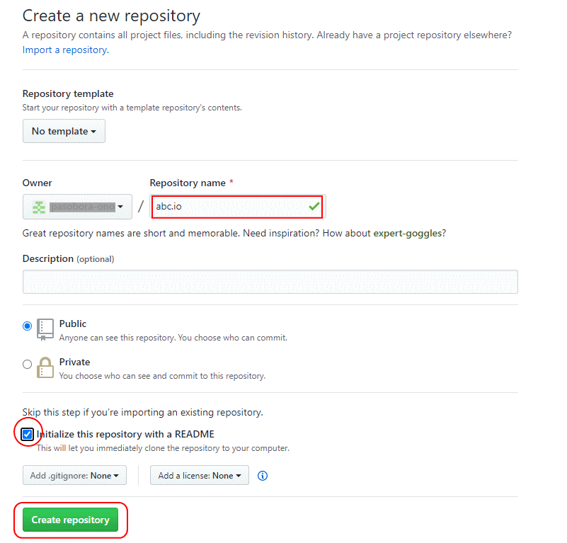

GitHubアカウントの登録
GitHub Pages（https://pages.github.com/）にアクセスし、Create a repository の「GitHub」をクリックします。「Sign up」を選択し、「Usename」、「 Email address」、「 password」を入力します。認証開始から、「Create account」「Complege setup」と進みます。GitHubからのメールを開き、「Verify email address」をクリックします。GitHub Pagesに戻り、パスワードを入力しサインインします。
リポジトリの作成
「https://github.com/」にアクセスし、 「Create repository」ボンタをクリックします。「Repository name」ボックスに「名称」.github.ioを入力し、 README を有効にするにチェックを入れ「Creae repository」ボタンをクリックします。
